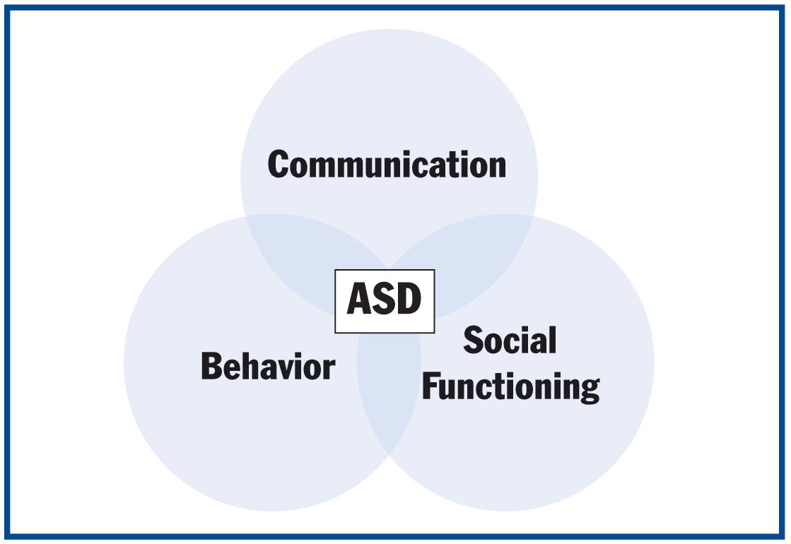

Neurodevelopmental disorders are a group of disorders that appear due to damage done during the development of the brain’s nervous system. This can affect the learning, communication, memory, emotion, or self-control of a person.
Autism Spectrum Disorders
Similar neurodevelopmental disorders were merged into a group called autism spectrum disorder (ASD). Autism spectrum disorders included disorders with similar challenges and symptoms. Each disorder faced similar problems with social interactions, communication, or behavior. Three common autism spectrum disorders are:
Asperger Syndrome
Asperger syndrome is one of the autism spectrum disorders. It is one of the milder disorders of the group. Someone with Asperger would have difficulty socializing and show an interest in certain topics or display repetitive behavior. They don’t understand and often miss nonverbal social cues, such as a wink or hand notions. Though people with Asperger find it difficult to socialize, they can talk a lot about something they are passionate about, but don’t notice or think about the opposing person’s feelings on the topic.
Symptoms of Asperger syndrome include:
Autistic Disorder
Autistic Disorder
Autistic disorder is the most common condition out of the autism spectrum disorders. Someone with autistic disorder will face social and communication challenges, along with unusual behavior or interests. They might feel uncomfortable with physical contact, and feel overly sensitive to the senses they perceive, such as sound or light. Autistic disorder is typically more severe then other autism spectrum disorders.
Symptoms include:
Pervasive Developmental Disorder-Not Otherwise Specified
Pervasive developmental disorder-not otherwise specified (PDD-NOS) is an autism spectrum disorder used for people with some autistic symptoms, but not all. The symptoms can be mild, but can also cause difficulty if severe.
Other Disorders:
Apart from the autism spectrum disorders, there are other neurodevelopmental disorders such as:
Attention-Deficit Hyperactivity Disorder
Attention-deficit hyperactivity disorder (ADHD) is a neurodevelopmental disorder
in which people are full of activity and find it hard to pay attention or control
their impulses. While it’s hard for most people to stay focused, it is far more
severe for those with ADHD and can cause daily problems.
There are three types of ADHD:
Hyperactivity-impulsiveness ADHD
Trouble staying still. Someone with this type of ADHD will always appear to be moving.
Inattentive ADHD
People have difficulty paying attention, and staying focused.
Combined ADHD
Includes a combination of the two types above.
| Inattention | Hyperactivity-impulsiveness |
|---|---|
| Easily distracted; quickly loses focus | Fidgets and squirms |
| Disorganized | Won't stay seated |
| Doesn't pay attention; makes mistakes | Talks nonstop |
| Difficulty following instructions | Always moving; restless |
| Forgetful | Difficulty being quiet |
| Won't complete tasks that require mental work or focus | Blurts out answers |
| Doesn't seem to be listening when spoken to | Has trouble with waiting for their turn or in line |
| Daydreams | Interrupts others |
Oppositional Defiant Disorder
It’s normal for a child to oppose authority occasionally. However, if someone is consistently arguing and disobeying higher authorities (teachers, parents), then they may have oppositional defiant disorder (ODD). When a person has ODD, they display an irritable mood and constantly talk back or disobey higher figures. This behavior can disrupt their daily routine, along with family or school activities.
Symptoms of ODD include: